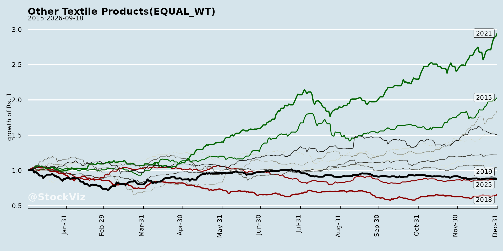
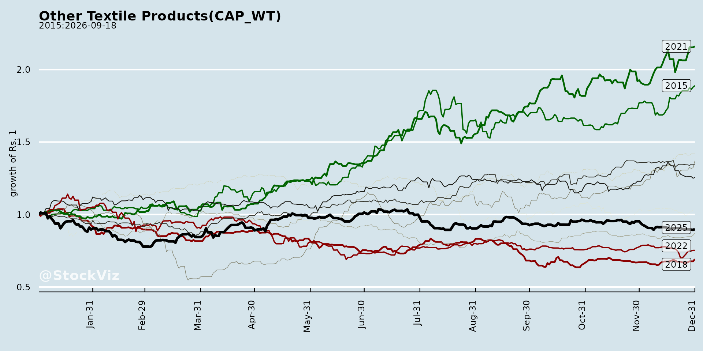
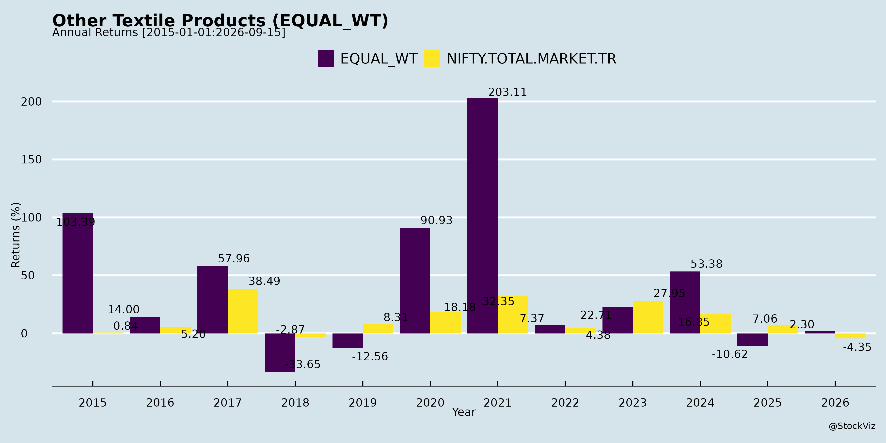
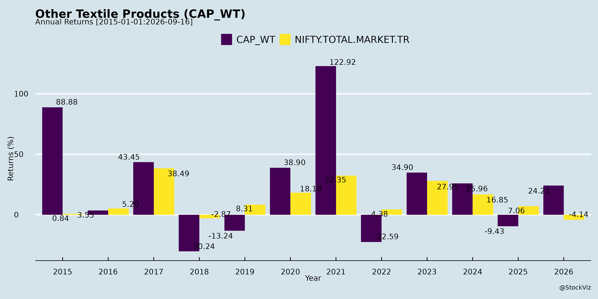
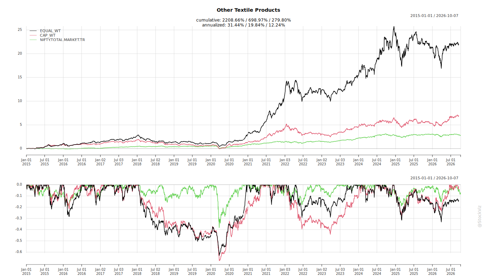
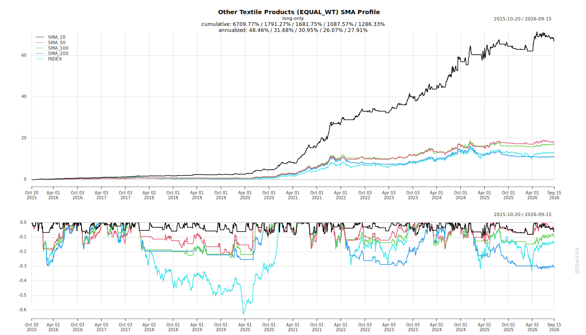
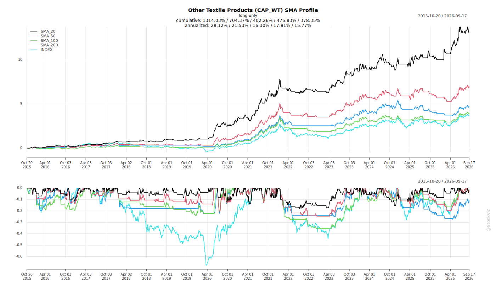
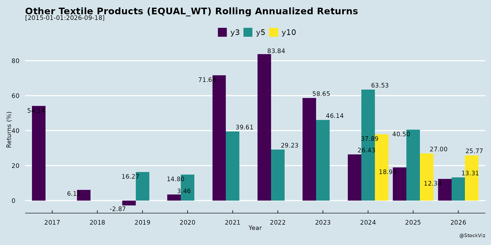
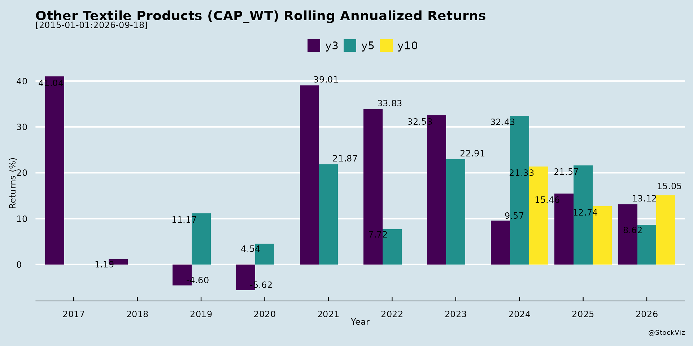

asof: 2026-04-15
Based on the provided sources, the Indian textile industry has undergone a significant transformation, evolving from a period marked by severe macroeconomic and operational headwinds into a phase of structural growth driven by favorable trade agreements, global supply chain realignments, and strategic shifts toward sustainability and value addition.
Here is a detailed breakdown of how the challenges and opportunities have evolved over time:
The Challenging Past: Era of Headwinds and Disruptions
Historically, and particularly over the last few years leading up to early 2026, the textile sector grappled with severe pressures that squeezed margins and hampered growth.
The Structural Shift: Evolving Opportunities
Recently, the narrative has shifted dramatically. The industry is currently entering what many companies describe as a “golden age,” fueled by sweeping policy changes and shifting global dynamics [29-32].
Industry Adaptation: How Companies are Capitalizing
To navigate past challenges and harness new opportunities, textile companies have fundamentally evolved their operational strategies:
In summary, the Indian textile industry has evolved from a defensively postured sector—battered by severe tariffs, volatile cotton prices, and global destocking—into an agile, sustainably-focused ecosystem. Empowered by landmark FTAs, geopolitical shifts, and a strategic pivot toward value-added technical textiles, the industry is now uniquely positioned to capture a significantly larger share of the global market [1, 3, 87, 88]
asof: 2026-04-15
High U.S. tariff impositions and trade uncertainties have been a primary headwind, with a massive 50% tariff on Indian textile imports severely impacting export demand, sentiment, and capacity utilization before a recent interim framework reduced it to 18% [1-4]. This tariff overhang led to substantial margin contraction, under-absorption of fixed costs, and double-digit de-growth in garmenting segments, particularly suppressing demand for knit, denim, mélange, and cotton yarns [5-7].
Global geopolitical disturbances and macroeconomic instability continue to broadly restrict the industry [8, 9]. Ongoing wars, global trade uncertainties, currency volatility, and inflation have disrupted supply chains and led international buyers to adopt a cautious, hand-to-mouth sourcing approach, which has elongated decision-making cycles and recalibrated pricing [10-14].
Raw material price volatility and supply constraints are placing heavy pressure on operating margins [13, 15, 16]. Indian domestic cotton has frequently traded at a premium compared to international prices, reducing the global competitiveness of Indian exporters [17-19]. The reinstatement of an 11% import duty on cotton starting January 1st has put Indian mills at a relative disadvantage against competing countries like Bangladesh and Vietnam [20, 21]. The absence of a transparent selling framework by the Cotton Corporation of India (CCI) has further added uncertainty for mills [20, 21]. In the recycling segment, a sudden and steep hike in bottle scrap prices led to a severe mismatch with selling prices, causing a drop in gross margins [22].
Regulatory and policy shifts have created immediate domestic disruptions. A recent change in the GST rate on fabrics from 12% to 5% led to temporary inventory build-ups and stock losses as consumers deferred purchases to await the new rates [23, 24]. Furthermore, the sudden removal of BIS/Quality Control Orders (QCO) on textile products in November created margin pressure across the value chain by allowing cheaper raw materials to enter the market [23, 25]. Additionally, an inverted GST duty structure on PTA and MEG continues to be a systemic issue [26, 27]. The implementation of new labour codes has also resulted in one-time costs, such as additional gratuity liabilities [23].
Regional competition, dumping, and logistical issues are threatening domestic market stability. A slowdown in China’s domestic demand, combined with U.S. tariffs on Chinese goods, has led China to dump excess products—such as nylon filament yarn—into India at cheaper rates, increasing imports by 50% to 70% in some categories [28]. There are also ongoing concerns regarding cheaper yarn imports entering from Bangladesh [29, 30]. Concurrently, logistical issues and severe labor unrest in Bangladesh have caused regional supply chain disruptions [13, 31].
Capacity closures and operational distress are prevalent in the spinning sector. Due to the combination of high raw material costs, non-automatic older technologies, and prolonged unviability, the Indian spinning industry has witnessed the permanent closure of approximately 11 to 13 million spindles over the last few years, with fears that closures could reach 15 million spindles if raw material prices do not correct [32-36].
Environmental regulation delays have specifically impacted the recycled PET (rPET) and sustainable textiles sector. Uncertainty surrounding a draft notification by the Ministry of Environment, Forest and Climate Change has delayed the mandatory integration of rPET into supply chains, which has significantly weakened demand and hampered capacity utilization for recycling businesses [37-39].
asof: 2026-04-15
Market Size and Growth Dynamics The Indian textile, apparel, and home furnishing industry is on a strong growth trajectory fueled by robust domestic demand and evolving global market shifts. The domestic market is expanding rapidly, with urban markets contributing approximately 65% of textile and apparel sales, while rural markets are growing at a faster rate of 17% year-over-year [1, 2]. Specific segments, such as the India Home Textile Market, are projected to grow from USD 11.91 billion in 2026 to USD 16.76 billion by 2031, representing a CAGR of 7.08% [3].
Favorable Global Trade Agreements A realignment of global supply chains is significantly benefiting the Indian textile sector. Key developments include: * Free Trade Agreements (FTAs): India has signed or concluded negotiations for FTAs with the UK and the European Union, which eliminate tariffs and provide a level playing field. This helps neutralize the comparative disadvantages Indian exporters previously faced against countries like Vietnam, Bangladesh, and China, particularly in value-added and man-made fiber segments [3-9]. * US Tariff Reductions: In February 2026, an interim trade framework between India and the United States reduced the tariff variance on textile products from 50% to 18%, which is expected to boost order inflows and improve market access [10-13]. * Regional Shifts: Looming changes to Bangladesh’s “developing country” status could alter its trade deals with Europe, presenting further opportunities for Indian manufacturers to capture market share [14-16].
Government Policy and Support The Indian government has introduced strong policy tailwinds to boost production and export competitiveness. This includes the Production Linked Incentive (PLI) scheme with an outlay of ₹10,683 Crores, the National Fiber Mission, and the expansion of textile parks and skilling initiatives [2, 3, 17, 18]. Furthermore, anti-dumping probes on imported polyester yarns signal policy support to protect domestic manufacturers and promote fair competition [19, 20].
Sustainability and the Circular Economy Sustainability is no longer a niche preference but a structural requirement driven by global regulations. * Recycling and Circularity: There is a massive shift toward using recycled PET (rPET) fibers and yarns. Companies are investing heavily in mechanical and chemical recycling to convert billions of discarded PET bottles into high-quality textile resins and yarns [21-24]. * Regulatory Mandates: European markets have introduced Extended Producer Responsibility (EPR) mandates, requiring brands to utilize 25% to 30% recycled materials (with goals of 100% by 2030-2032), and are increasingly pushing for true circularity via “textile-to-textile” recycling rather than just “bottle-to-textile” [25, 26]. * Eco-friendly Operations: Industry players are implementing Zero Liquid Discharge (ZLD) facilities, Multiple Effect Evaporators, and switching from fossil fuels to agro-fuels/biomass and solar power [27-32]. Compliance is strictly validated through globally recognized certifications like OEKO-TEX, Global Recycled Standard (GRS), and Vegan certificates [27, 33, 34].
Strategic Shift to Value-Added and Technical Textiles To protect margins from commodity price wars, the industry is pivoting toward specialized, complex products where customer substitution is difficult. * Value Addition: Manufacturers are moving away from basic gray yarns and standard commodity fabrics into design-intensive, premium home textiles, performance knits, and activewear [35-40]. * Technical Textiles: Companies are heavily exploring technical and industrial applications. This includes FR (flame retardant) fabrics, automotive fabrics, protective textiles, geo-synthetics, and specialized aquaculture/marine netting solutions designed to resist bio-fouling and reduce environmental footprints [41-51]. * Premium Fibers: There is an increasing use of higher-margin specialty fibers, such as aramids (Kevlar), sustainable hemp, flax, banana fiber, and recycled cotton [52, 53].
Vertical Integration A major competitive differentiator in this industry is the deployment of a fully integrated business model. Companies that possess end-to-end capabilities—from spinning raw fiber into yarn, to weaving, dyeing, processing, and finally garmenting—enjoy significant advantages [54-62]. This integration absorbs raw material volatility shocks, improves floor efficiency, allows for bulk procurement benefits, and ensures consistent quality and faster turnaround times at scale [48, 55, 56, 63-65].
Regulatory Changes in Labor Laws On the domestic regulatory front, companies are navigating a significant transition as the Government of India consolidated 29 existing labor laws into four new unified Labour Codes, which went into effect on November 21, 2025. This impacts occupational safety, wages, social security, and industrial relations, requiring the industry to assess and adjust compliance and financial structures [66-69].
asof: 2026-04-15
Transformative International Trade Agreements The most significant tailwinds driving the Indian textile industry are recent landmark trade agreements that have drastically improved global market access. * United States Tariff Reductions: Following an interim bilateral trade framework, the U.S. has reduced import tariffs on Indian textile products from a punitive 50% down to approximately 18% [1-4]. This structural shift gives India a distinct competitive edge over China, which faces tariffs around 34%, and neutralizes the comparative disadvantages India previously faced against countries like Vietnam and Bangladesh [5, 6]. * European Union Free Trade Agreement (FTA): The successful conclusion of the comprehensive India-EU FTA is viewed as a game-changer. It reduces tariffs that previously ranged from 8% to 12% to almost zero [7-9]. This provides India a level playing field with major competitors like Bangladesh, Turkey, Vietnam, and Sri Lanka in a European import market valued at over $250 billion annually [7, 9-11]. * Additional FTAs: India has also expanded its trade architecture by signing FTAs with the UK (eliminating tariffs entirely), Oman (providing ~98% duty-free access and positioning Oman as a gateway to the GCC), New Zealand, and the EFTA bloc [12-15].
Global Supply Chain Realignment (“China Plus One”) International buyers are actively diversifying their supply chains away from historical manufacturing hubs. * Shifting Away from Competitors: The industry is benefiting from Western buyers shifting their sourcing away from China and Bangladesh to diversify supply chain risks [16, 17]. * Geopolitical and Economic Shifts: Ongoing political challenges, labor unrest, and logistical disruptions in Bangladesh, combined with rising cost pressures in Vietnam, are making India an increasingly attractive alternative [18, 19]. Consequently, global brands are viewing India as a highly stable, long-term sourcing destination for quality apparel and textiles [16, 20].
Robust Government Policy and Financial Support The Indian government has introduced extensive policy measures and budgetary support to accelerate sector growth under its “Make in India” and “Aatmanirbhar Bharat” initiatives [17, 21]. * Union Budget 2026-27 Initiatives: The government has reinforced its focus on textiles with announcements like the National Fiber Mission, expansion of Mega Textile Parks, Text-ECON, and the SAMARTH 2.0 skilling initiative [22, 23]. * Direct Financial Incentives: The government allocated ₹1,148 crore for the Production Linked Incentive (PLI) scheme to boost domestic manufacturing and exports, alongside ₹635 crore for the Amended Technology Upgradation Fund Scheme to modernize textile machinery [24]. * Export Promotion: The cabinet cleared a massive ₹25,000-crore Export Promotion Mission and ₹20,000 crore in additional collateral-free credit to support exporters with logistics, branding, and warehousing, explicitly prioritizing sectors like textiles that were previously hit by global trade uncertainties [21].
Favorable Macroeconomic and Domestic Market Dynamics The domestic textile and apparel market is projected to reach $350 billion by 2030, growing at a 10% CAGR [25]. * Demographic and Lifestyle Shifts: Strong domestic demand is being fueled by rapid urbanization, lifestyle changes, and a growing, fashion-conscious youth demographic, with the fast fashion segment projected to grow at a CAGR of ~16.7% [26]. * Economic Environment: Steady macroeconomic growth, controlled inflation, and strong domestic consumption sentiment are providing a highly predictable and favorable environment for manufacturers [27]. Additionally, a weaker Indian Rupee (INR depreciation) has notably enhanced the price competitiveness of Indian exports globally [12, 20].
Raw Material Stability and Supply Side Relief After periods of high volatility, the input cost environment has stabilized, supporting margin resilience across the value chain. * Cotton Pricing: Cotton prices have remained largely stable without the extreme volatility seen in previous years, providing manufacturers with much-needed predictability for pricing and margins [28, 29]. * Regulatory Relief for Synthetics: The withdrawal of Quality Control Orders (QCOs) on yarns and Purified Terephthalic Acid (PTA) has eased supply-side constraints, allowing Indian manufacturers to access competitively priced imports [30]. Furthermore, the Ministry of Finance rejected recommended anti-dumping duties on Monoethylene Glycol (MEG), effectively removing a significant cost overhang for the polyester value chain [30].
Sustainability and the Circular Economy There is a massive global pivot toward sustainable, recycled, and traceable textiles, representing a structural, rather than cyclical, demand shift. * Recycled Materials Demand: Driven by Extended Producer Responsibility (EPR) rules and global regulatory frameworks, demand for recycled materials like rPET (recycled polyethylene terephthalate) is surging [23, 31]. The sustainable fashion market is projected to reach ~$200 billion by FY30 [32]. * Carbon Neutrality Goals: The Indian government has established a clear vision to make the country’s textile sector carbon-neutral by 2030, aligning domestic manufacturing practices with the stringent sustainability, traceability, and labor standards increasingly required by European and North American markets [33-35].
asof: 2026-04-15
The general outlook for the Indian textile industry is highly optimistic and structurally strong, with industry leaders anticipating a transformative phase of very high growth over the next 3 to 5 years [1-3]. While the sector has recently navigated short-term headwinds—such as raw material price volatility, global trade uncertainties, and cautious sourcing behavior—the medium to long-term prospects are bolstered by several powerful tailwinds [4-6].
Landmark Trade Agreements and Tariff Reductions One of the most significant catalysts for the industry’s positive outlook is the reshaping of global trade dynamics. Recent free trade agreements (FTAs) and tariff revisions are unlocking unprecedented market access for Indian exporters [7-9]. * United States: The recent announcement of an interim trade framework with the U.S. aimed at reducing tariffs from a prohibitive 50% down to 18% is expected to drastically improve market access, stimulate demand recovery, and restore order inflows that had previously been muted [10-13]. * European Union & UK: The conclusion of negotiations for a comprehensive India-EU FTA is considered a landmark achievement that will fundamentally transform the industry [3, 14, 15]. By reducing tariffs from 8%-12% to almost zero, India achieves parity and a level playing field with competing nations like Bangladesh, Vietnam, and Turkey, while gaining a distinct advantage over China [13, 15, 16]. * Other Markets: Additional agreements, such as the India-New Zealand FTA and the India-Oman CEPA (which positions Oman as a gateway to the GCC), are further diversifying India’s export footprint and mitigating geographic concentration risks [17-19].
Global Supply Chain Realignment and the “China Plus One” Strategy The global market is actively seeking to diversify its supply chains, and India is increasingly viewed as a stable, long-term destination for quality textiles [20, 21]. Western buyers are shifting their sourcing away from China and Bangladesh to mitigate risks [20, 22]. For instance, ongoing labor unrest, operational disruptions, and high U.S. tariffs in Bangladesh’s textile sector are creating highly favorable conditions for Indian exporters to capture incremental global market share [13, 23].
Robust Domestic Market Expansion Beyond exports, the domestic Indian textile and apparel market is experiencing explosive growth. The Indian market is projected to grow at a 10% CAGR, reaching $350 billion by 2030 [24]. This surge is driven by: * Rapid urbanization, lifestyle shifts, and a growing middle-class population that is expected to reach 38% by FY31 [25]. * An increasingly fashion-conscious youth demographic, propelling the fast-fashion industry to an estimated 16.7% CAGR [25]. * Rising rural spending, which is expanding faster than urban spending (17% YoY compared to 12%) [26].
Strong Government Policy Support The Indian government is actively catalyzing industry growth through the “Make in India” initiative and Union Budget allocations [22, 27]. Massive support measures include a ₹10,683 crore outlay for the Production Linked Incentive (PLI) Scheme to boost domestic manufacturing, the expansion of Mega Textile Parks, the National Fiber Mission, and the Amended Technology Upgradation Fund Scheme (TUFS) to modernize machinery [3, 17, 26, 28].
Industry Consolidation Benefiting Efficient Players The global textile sector is undergoing significant consolidation due to higher operational costs, leading to widespread mill shutdowns in countries like Turkey, Indonesia, Pakistan, and Bangladesh [29-31]. Domestically, between 11 to 13 million older, inefficient spindles have permanently closed in India over the past few years [32, 33]. This reduction in excess capacity is correcting the demand-supply imbalance, which is expected to normalize the market and vastly improve the pricing power and EBITDA margins of well-managed, integrated, and efficient textile units [30, 32, 34].
Strategic Shift Towards Value-Addition and Sustainability To shield themselves from commodity cycles, companies are pivoting toward higher-margin, value-added products and sustainable practices [15, 35]. * Technical and Performance Textiles: There is a strong push into specification-driven segments like industrial textiles, automotive fabrics, activewear, and protective textiles, leveraging existing infrastructure to tap into higher margins [36-38]. * Circularity and Green Fibers: Global consumer demand and strict Extended Producer Responsibility (EPR) regulations in Europe and North America are accelerating the need for recycled polyester, bio-based fibers, and traceable supply chains [28, 39]. This is no longer just a corporate social responsibility initiative, but a core commercial requirement driving structural demand [40, 41].
While near-term challenges such as fluctuating cotton prices and geopolitical tensions require careful navigation, the confluence of favorable trade policies, shifting global supply chains, massive domestic demand, and industry modernization points to a highly lucrative and stable long-term outlook for the Indian textile industry [4, 5, 42, 43].
Copyright © 2023 SAS Data Analytics Pvt. Ltd. All rights reserved.